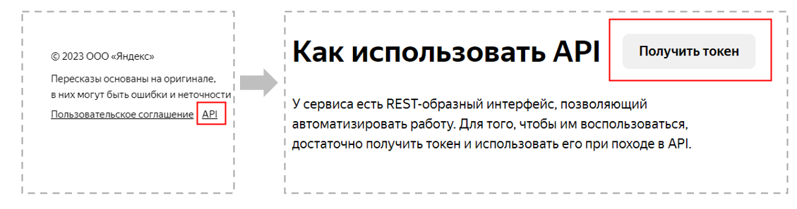

r300ya
Source:README.ru.md
English | Русский | Сайт пакета

Пакет r300ya даёт доступ из R к сервису Яндекса https://300.ya.ru через API. Сервис с помощью YandexGPT автоматически делает краткий пересказ интернет-страницы: заголовок и список главных тезисов.
Получение токена
Токен может получить авторизованный пользователь сервисов Яндекса по следующей схеме:

Токен лучше не писать в скриптах, а сохранить в файле .Renviron (открыть его можно командой usethis::edit_r_environ()):
После перезапуска R пакет подхватит токен автоматически.
Пример
Основная функция retell_text() принимает на вход 2 параметра:
-
url: ссылка на оригинальную страницу; -
token: токен (по умолчанию берётся из переменной окруженияYA300_TOKEN).
library(r300ya)
res <- retell_text("https://habr.com/ru/news/729422/")
res
#> «Яндекс Браузер» научили переводить с китайского языка и автоматически накладывать русскую озвучку
#> * Яндекс Браузер научился переводить видео с китайского языка
#> * Технология работает на YouTube и будет добавлена на Bilibili
#> * Разработчики создали датасет из 1,5 млн видео с субтитрами на севернокитайском языке
#> * ...
#>
#> Retelling: https://300.ya.ru/3fOcYRBL
#> Original: https://habr.com/ru/news/729422/Результат — список с элементами:
-
title: заголовок статьи; -
short_text: тезисы краткого пересказа (вектор строк); -
theses: подробный пересказ, таблица с колонкамиchapter(раздел) иthesis(тезис); -
short_url: ссылка на пересказ на 300.ya.ru; -
original_url: исходная ссылка.
Оригинальная страница может быть на любом языке, YandexGPT попробует её пересказать.
Ограничения и ошибки
Сервис не может пересказать страницу, если:
- страница слишком длинная;
- ссылка ведёт не на статью, а на файл, например
*.pdf; - на странице слишком мало текста.
В этих случаях, а также при неверном токене retell_text() выдаёт ошибку. У каждой ошибки есть класс, поэтому их можно обрабатывать:
-
r300ya_error_token: токен не указан или не подходит; -
r300ya_error_api: сервис не смог пересказать страницу (в сообщении указана причина); -
r300ya_error_parse: не удалось разобрать страницу с пересказом (скорее всего, 300.ya.ru изменил вёрстку — сообщите, пожалуйста, в issues); -
r300ya_error_input: неверно указанurl.
Например, так можно пересказать несколько страниц и пропустить те, что не получились:
urls <- c("https://habr.com/ru/news/729422/", "https://example.com/file.pdf")
results <- lapply(urls, function(u) {
tryCatch(retell_text(u), r300ya_error_api = function(e) NULL)
})Подробнее — в виньетке vignette("r300ya") (на английском).
Условия использования
r300ya — неофициальный пакет, не связанный с Яндексом. Он лишь автоматизирует запросы, которые вы могли бы сделать сами на https://300.ya.ru со своим токеном. Используя его, вы принимаете условия использования 300.ya.ru и Пользовательское соглашение сервисов Яндекса. В частности (редакция от 8 февраля 2024 г.):
- сервис и пересказы можно использовать только в личных некоммерческих целях (п. 2.4, 3.2);
- пересказы нельзя использовать для обучения или тестирования моделей ИИ (п. 3.6);
- нельзя пересказывать и распространять страницы с незаконным, оскорбительным или нарушающим авторские права содержимым (п. 2.5), проверять пересказы — ваша ответственность;
- пересказы интернет-страниц размещаются на 300.ya.ru и доступны всем по прямой ссылке (п. 2.1.1);
- Яндекс может запретить автоматическое обращение к своим сервисам (Пользовательское соглашение), поэтому не отправляйте большое количество запросов.